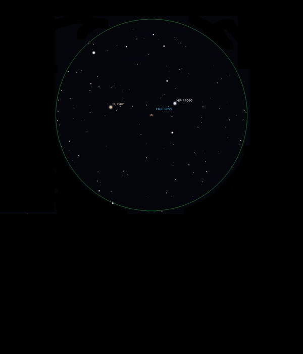

NGC 2655
Galaxy
in Camelopardalis
NGC 2655
Mag 10.1
02/02/16
Sometimes a FOV inspires, with stars forming an attractive
asterism with the deep sky object framed by them
NGC 2655 is just such a view in 12mm
Easy to locate, and in 12mm looks like a mini Cygnus, with
FL cam, HIP 43431 at Mag 6.90 at the head, HIP 44060 at Mag
7.30 at the tail and the wings formed by stars of Mags 9.80
and 10.15, all nicely symmetrical
NGC 2655 sits in the triangle formed by FL Cam, HIP 44060
and the Mag 9.8 star
Faint but distinct with inverted vision
Slow moving FOV makes for a nice steady view
A hint of shape to the Galaxy perhaps?
All in all a very nice object, especially considering its
magnitude